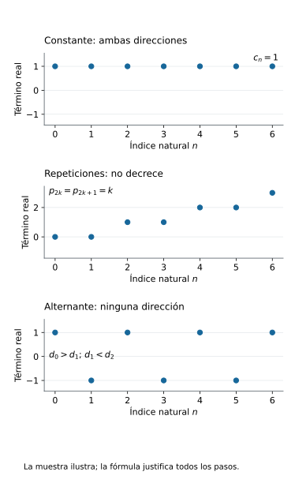
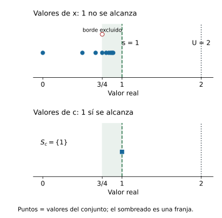
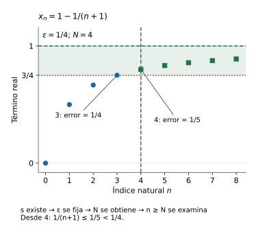
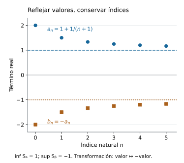
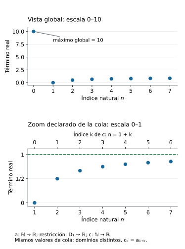
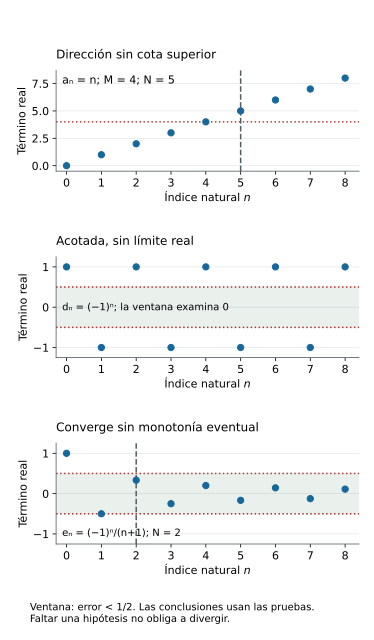
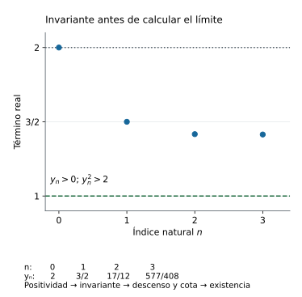
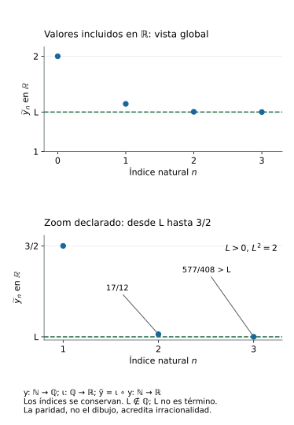

Capítulo 7 — Monotonía, cotas y existencia de límites
Índice del libro · Capítulo 7 · Ejercicios · Soluciones · Soluciones de microcontroles
En el capítulo anterior, una afirmación de convergencia venía acompañada de un candidato real. Fijábamos ese número y comprobábamos que cualquier ventana alrededor de él capturaba una cola de la sucesión. Las reglas de cálculo nos permitieron obtener nuevos límites a partir de límites cuya existencia ya conocíamos. Queda una pregunta distinta: si no sabemos de antemano cuál es el candidato, ¿qué propiedades de una sucesión pueden garantizar que alguno exista?
Una sucesión cuyos valores avanzan siempre en la misma dirección ofrece un punto de partida. Si los términos no decrecen, cada uno conserva o mejora la altura alcanzada por los anteriores. Una barrera superior puede impedir que esas alturas crezcan sin control. El orden de los términos y la cota parecen sugerir un destino, pero hace falta justificar que ese destino sea un número real y que todas las tolerancias de la definición se cumplan.
La pregunta rectora será: ¿cuándo el orden de los términos y una barrera garantizan que exista un límite real? C02 nos enseñó a distinguir una cota de la menor cota superior; C03 garantizó la existencia de ese supremo para conjuntos reales no vacíos y acotados superiormente. Usaremos esa interfaz para construir un candidato y después demostrar, con la definición de C06, que la monotonía permite capturar una cola a cualquier precisión. La existencia del extremo y la propagación del control tendrán obligaciones separadas en la prueba.
Conservamos \(\mathbb N=\{0,1,2,\ldots\}\) y las sucesiones reales \(a:\mathbb N\to\mathbb R\). El índice \(n\) pertenece al dominio; el término \(a_n\), las cotas y el límite pertenecen a la recta real. Comenzaremos por precisar qué significa que los términos mantengan una dirección. Más adelante aplicaremos el resultado a recurrencias: primero justificaremos que estén definidas y que exista su límite; entonces podremos usar las reglas de C06 para identificarlo.
7.1. Comparar términos: qué significa ser monótona
Una dirección que permita repeticiones
Consideremos la sucesión \(p\) definida por \(p_{2k}=k\) y \(p_{2k+1}=k\) para cada \(k\in\mathbb N\). Todo índice natural es par o impar, así que estas dos cláusulas asignan un único valor a cada índice. Sus primeros términos son \(0,0,1,1,2,2,3,3,\ldots\). Al pasar de un término al siguiente, el valor se conserva o aumenta; las repeticiones no cambian la dirección.
Si describiéramos esa propiedad diciendo que «cada término es mayor que el anterior», excluiríamos los pasos de \(p_{2k}\) a \(p_{2k+1}\). Necesitamos una comparación que admita igualdad. Esto también permitirá incluir una sucesión constante, que no baja ni sube.
Monotonía de una sucesión real. Una sucesión \(a:\mathbb N\to\mathbb R\) es no decreciente si \(a_n\le a_{n+1}\) para todo \(n\in\mathbb N\), y es no creciente si \(a_{n+1}\le a_n\) para todo \(n\in\mathbb N\). Es monótona si satisface al menos una de estas dos propiedades.
La definición exige una dirección para todos los pasos. Su estructura lógica es
\[ \bigl(\forall n\in\mathbb N,\ a_n\le a_{n+1}\bigr) \quad\text{o}\quad \bigl(\forall n\in\mathbb N,\ a_{n+1}\le a_n\bigr). \]
La disyunción es inclusiva: permite que ambas afirmaciones sean verdaderas. Una constante \(a_n=c\) cumple las dos porque \(c\le c\). En cambio, la afirmación «para cada \(n\), uno de los dos valores es menor o igual que el otro» vale para cualquier par de números reales por el orden total. Si se permitiera cambiar la dirección a cada paso, esa afirmación no distinguiría las sucesiones monótonas de las demás.
En este capítulo usaremos estrictamente creciente para \(a_n<a_{n+1}\) en todo índice, y estrictamente decreciente para \(a_{n+1}<a_n\) en todo índice. Las desigualdades estrictas excluyen repeticiones adyacentes; son propiedades más exigentes. Cada vez que usemos una dirección, la especificaremos con estas expresiones para evitar que «crecer» se interprete silenciosamente como crecimiento estricto.
De un paso a cualquier par de índices
La definición compara vecinos, pero al trabajar con una cola necesitaremos comparar un término con todos los que vienen después. ¿Autoriza la condición \(a_k\le a_{k+1}\) a afirmar \(a_n\le a_m\) cuando \(n\le m\)? Entre dos índices naturales fijados hay un número finito de pasos; la transitividad del orden permite reunirlos.
Comparación entre índices ordenados. Para una sucesión real \(a\), las siguientes condiciones son equivalentes:
- \(a_n\le a_{n+1}\) para todo \(n\in\mathbb N\).
- Para todos \(n,m\in\mathbb N\) con \(n\le m\), se cumple \(a_n\le a_m\).
También son equivalentes las condiciones \(a_{n+1}\le a_n\) para todo \(n\) y \(a_m\le a_n\) para todos los índices \(n\le m\).
La primera dirección de cada equivalencia reúne las comparaciones intermedias. La vuelta recupera un paso vecino eligiendo \(m=n+1\). Esa elección no depende de ninguna propiedad de los valores.
Demostración. Supongamos primero que \(a_k\le a_{k+1}\) para todo índice \(k\). Fijemos \(n,m\in\mathbb N\) con \(n\le m\). Si \(n=m\), la conclusión es \(a_n\le a_n\). Si \(n<m\), las comparaciones adyacentes dan la cadena finita
\[ a_n\le a_{n+1}\le\cdots\le a_m. \]
Por transitividad, \(a_n\le a_m\). Para hacer explícito el papel de la finitud, podemos escribir \(m=n+r\) con \(r\in\mathbb N\) e inducir sobre \(r\): el caso \(r=0\) es reflexividad, y el paso combina \(a_n\le a_{n+r}\) con \(a_{n+r}\le a_{n+r+1}\). Como los índices fijados eran arbitrarios, queda probada la condición para todo par ordenado.
Recíprocamente, supongamos que \(a_n\le a_m\) siempre que \(n\le m\). Para cualquier \(n\in\mathbb N\), el natural \(m=n+1\) satisface \(n\le m\), así que \(a_n\le a_{n+1}\). Se recupera la condición adyacente en todos los índices.
Para la dirección no creciente, supongamos que \(a_{k+1}\le a_k\) para todo \(k\). Si \(n=m\), de nuevo basta reflexividad. Si \(n<m\), la cadena es \(a_m\le a_{m-1}\le\cdots\le a_n\); cada comparación usa una hipótesis adyacente y la transitividad da \(a_m\le a_n\). En la dirección inversa, la comparación para \(n\le m\) aplicada a \(m=n+1\) da \(a_{n+1}\le a_n\). Esto demuestra también la segunda equivalencia.
Cada cadena pertenece a un par de índices ya fijado. La prueba no presupone un último término de la sucesión ni emplea un índice infinito. Aunque haya infinitos índices posibles, la distancia entre dos naturales concretos es finita.
Las versiones estrictas siguen el mismo argumento: si cada comparación adyacente es estricta, entonces \(a_n<a_m\) para \(n<m\) en la dirección creciente, y \(a_m<a_n\) para \(n<m\) en la decreciente. Recíprocamente, esas comparaciones para índices distintos dan las adyacentes al elegir \(m=n+1\). Aquí se exige \(n<m\): incluir \(n=m\) pediría \(a_n<a_n\), imposible.
Qué puede propagarse desde un término
Podemos reutilizar inmediatamente la comparación entre índices. Supongamos que \(a\) es no decreciente y que un término \(a_N\) supera una barrera real \(c\). Para cualquier \(n\ge N\), la proposición da \(a_N\le a_n\), de modo que \(c<a_N\le a_n\). Así, todos los términos posteriores también superan \(c\). Si sólo sabemos \(c\le a_N\), obtenemos la versión no estricta \(c\le a_n\).
En una sucesión no creciente, un término \(a_N<c\) controla en la otra dirección: para \(n\ge N\), tenemos \(a_n\le a_N<c\). La monotonía convierte la comparación acreditada en un índice en una comparación para toda su cola. Todavía no hemos demostrado que haya un término próximo a una barrera elegida ni que exista un límite; hemos identificado la herramienta que permitirá propagar una comparación cuando se consiga ese término.
En la sucesión \(p\), por ejemplo, \(p_4=2\). Una vez verificado que \(p\) no decrece, la proposición permite concluir \(p_n\ge2\) para todo \(n\ge4\). Para justificar la hipótesis en todo índice, distinguimos las dos paridades: de \(2k\) a \(2k+1\) los valores son iguales a \(k\), y de \(2k+1\) a \(2k+2\) pasan de \(k\) a \(k+1\). Ambas comparaciones son no decrecientes. La muestra inicial sugería la dirección; estas dos cláusulas la demuestran para todos los pasos.
Comprobar una dirección y refutarla
Una fórmula permite trabajar con un índice arbitrario. Si \(a\) está definida en todo \(\mathbb N\), es no decreciente exactamente cuando \(a_{n+1}-a_n\ge0\) para todo \(n\), y no creciente exactamente cuando esa diferencia es no positiva para todo \(n\). Estas equivalencias proceden de sumar o restar el mismo número en una desigualdad; la diferencia es real, no un cambio del índice.
Para \(x_n=1-1/(n+1)\), los denominadores son positivos también en \(n=0\), y
\[ x_{n+1}-x_n =\frac1{n+1}-\frac1{n+2} =\frac1{(n+1)(n+2)}>0. \]
Esto demuestra que \(x\) es estrictamente creciente. La sucesión \(z_n=1/(n+1)\) tiene la diferencia opuesta, \(z_{n+1}-z_n=-1/[(n+1)(n+2)]<0\), así que es estrictamente decreciente. La comparación entre índices vale globalmente en ambas, con su dirección correspondiente.
Para refutar una dirección universal basta un paso que la contradiga. En \(r_n=(-1)^n\), tenemos \(r_0=1>r_1=-1\), por lo que no es no decreciente. También \(r_1=-1<r_2=1\), por lo que no es no creciente. Estas dos comparaciones refutan las dos alternativas de la definición: \(r\) no es monótona. Una sola caída habría refutado únicamente el no decrecimiento; todavía habría que examinar la otra dirección.
| Sucesión | No decreciente | No creciente | Comparación decisiva |
|---|---|---|---|
| \(a_n=1\) | Sí | Sí | Igualdad en cada paso |
| \(p_{2k}=p_{2k+1}=k\) | Sí | No | Igualdad o subida; de índice 1 a 2 pasa de 0 a 1 |
| \(x_n=1-1/(n+1)\) | Sí | No | Diferencia positiva para todo \(n\) |
| \(z_n=1/(n+1)\) | No | Sí | Diferencia negativa para todo \(n\) |
| \(r_n=(-1)^n\) | No | No | Baja de índice 0 a 1 y sube de 1 a 2 |
La tabla registra propiedades de las funciones completas. Sus justificaciones son las comparaciones universales o los infractores escritos; no se extraen de contar unos pocos valores.

En la figura de los pasos, las gráficas de la constante, de \(p\) y del alternante son colecciones de puntos \((n,a_n)\). En la constante, puntos de índices distintos tienen la misma altura. En el alternante, el paso de índice 0 a 1 baja y el de 1 a 2 sube. No necesitamos unir esos puntos mediante una curva: la definición compara términos en índices naturales y no asigna valores en los intervalos entre índices.
Dos direcciones a la vez y el límite de una muestra
Las constantes cumplen ambas direcciones. También podemos demostrar la vuelta. Si \(a\) es no decreciente y no creciente, para cualquier \(n\in\mathbb N\) la comparación con el índice 0 da \(a_0\le a_n\) y \(a_n\le a_0\). Por antisimetría, \(a_n=a_0\). Por tanto, una sucesión es a la vez no decreciente y no creciente si y sólo si es constante.
Esto no exige que \(a\) sea inyectiva. Una función puede repetir valores; la constancia repite el mismo en todos los índices, y la sucesión \(p\) repite algunos sin ser constante. Lo que distingue estas situaciones es la comparación de los términos para todos los índices, no la definición de función.
Una muestra creciente tampoco garantiza monotonía global. Definamos \(b_n=n\) para \(0\le n\le100\) y \(b_n=-1\) para \(n\ge101\). Es una función definida en todo \(\mathbb N\), y sus primeros 101 términos son \(0,1,\ldots,100\). Sin embargo, \(b_{100}=100>b_{101}=-1\) refuta el no decrecimiento. El paso \(b_0=0<b_1=1\) refuta el no crecimiento, de modo que la sucesión tampoco es monótona. Un listado finito puede ocultar el infractor que queda fuera de él.
Antes de seguir
- En la condición \(a_n\le a_{n+1}\), identifica el tipo de \(a\), \(n\), \(n+1\), \(a_n\) y \(a_{n+1}\). Explica por qué la desigualdad compara valores y no índices.
- Escribe en símbolos la definición de sucesión monótona, distinguiendo la disyunción de dos condiciones universales de una elección de dirección distinta en cada índice.
- Para \(p_{2k}=p_{2k+1}=k\), justifica el no decrecimiento en todos los pasos y señala una comparación que impida que sea no creciente. ¿Es estrictamente creciente?
- Reconstruye las dos direcciones de la equivalencia entre comparación adyacente y comparación para índices ordenados en el caso no creciente. Incluye el caso de índices iguales.
- Demuestra que una sucesión no decreciente y no creciente a la vez es constante. Explica por qué una constante satisface ambas direcciones sin dejar de ser función.
- En \(r_n=(-1)^n\), da un infractor de cada dirección. ¿Por qué una sola caída no basta para concluir que una sucesión no es monótona?
- Supón que \(a\) es no decreciente y \(a_N>c\), con \(N\in\mathbb N\) y \(c\in\mathbb R\). Justifica que \(a_n>c\) para todo \(n\ge N\). Formula y prueba la versión correspondiente para una sucesión no creciente y un término menor que \(c\).
- Para \(b_n=n\) si \(0\le n\le100\) y \(b_n=-1\) si \(n\ge101\), explica por qué una muestra de índices 0–100 no decide la monotonía global. Señala los infractores necesarios y distingue esta función de la sucesión \(n\mapsto n\).
7.2. El conjunto de valores y su mejor barrera
Pasar de la función a sus valores
La monotonía compara valores respetando el orden de los índices. Para buscar una barrera superior, en cambio, podemos reunir todos esos valores en un conjunto. Si \(a:\mathbb N\to\mathbb R\), escribimos \(S_a=\{a_n:n\in\mathbb N\}\subseteq\mathbb R\). Este conjunto es no vacío: contiene \(a_0\). Sus elementos son números reales, y un mismo valor repetido en varios índices aparece como un solo elemento del conjunto.
En la sucesión \(p\) de §7.1, cada natural aparece dos veces como término, pero \(S_p=\{0,1,2,\ldots\}\), considerado como subconjunto de \(\mathbb R\). Pasar a \(S_p\) conserva los valores disponibles y pierde la asignación que nos dice en qué índice aparece cada uno. La función \(p\) y el conjunto \(S_p\) son objetos distintos.
Esa pérdida incluye el orden de aparición. La sucesión \(a_n=n\) y la función \(b\) dada por \(b_0=0\), \(b_1=2\), \(b_2=1\) y \(b_n=n\) para \(n\ge3\) tienen el mismo conjunto de valores. Sin embargo, \(a\) es estrictamente creciente y \(b\) no es monótona: sube de índice 0 a 1 y baja de 1 a 2. El conjunto sirve para estudiar cotas, pero no sustituye a la función cuando importa la monotonía.
Una cota y la menor cota superior
Una cota superior real \(U\) de la sucesión satisface \(a_n\le U\) para todo \(n\in\mathbb N\). Esto equivale a que \(U\) sea cota superior de \(S_a\). En efecto, todo elemento de \(S_a\) es algún \(a_n\), y todo término pertenece a \(S_a\). Así podemos aplicar las definiciones y resultados sobre conjuntos de C02 al conjunto de valores.
Recordemos la distinción de C02. Un número \(s\) es el supremo de \(S_a\) si es cota superior y, además, \(s\le U\) para toda cota superior \(U\) de \(S_a\). Un máximo es un elemento del conjunto que es mayor o igual que todos los demás. Por tanto, si un conjunto tiene máximo, ese máximo es también su supremo: al pertenecer al conjunto, cualquier cota superior debe estar por encima de él. La vuelta exige pertenencia. Si \(s=\sup S_a\) y \(s\in S_a\), entonces \(s\) es máximo; si \(s\notin S_a\), el conjunto no tiene máximo, pues cualquier máximo tendría que ser su supremo.
La existencia de una cota superior no forma parte de la definición de cualquier sucesión. Cuando sí la tenemos, podemos usar C03 §3.2: todo subconjunto no vacío de \(\mathbb R\) acotado superiormente tiene supremo real. Para \(S_a\), la no vaciedad ya está acreditada por \(a_0\) y la cota de la sucesión proporciona la otra hipótesis. Este es el punto en que interviene completitud. La monotonía no hace falta para obtener el supremo del conjunto de valores; tendrá otra función al controlar los índices posteriores.
Tampoco es necesario que una cota superior sea el supremo. Si \(U\) es cota y \(V\ge U\), entonces \(a_n\le U\le V\) para todo \(n\), por lo que \(V\) también es cota. El supremo selecciona la menor entre ellas, aunque ese número no sea un término de la sucesión.
La franja que ninguna cota menor puede vaciar
Recuperemos la caracterización de C02 §2.5 en el lenguaje de sucesiones. Una vez acreditada la existencia de \(s=\sup S_a\), para cada \(\varepsilon>0\) hay un índice \(j\in\mathbb N\) tal que \(s-\varepsilon<a_j\le s\). Geométricamente, cada franja \((s-\varepsilon,s]\) contiene algún valor de la sucesión. El extremo inferior queda excluido y el superior puede estar incluido.
Caracterización de la barrera superior. Para una sucesión real \(a\) y un número real \(s\), son equivalentes:
- \(s=\sup S_a\).
- \(s\) es cota superior de \(S_a\) y para cada \(\varepsilon>0\) existe un \(j\in\mathbb N\) con \(s-\varepsilon<a_j\).
La caracterización contiene dos obligaciones. La cota impide valores por encima de \(s\); la aproximación impide que podamos bajar esa cota una cantidad positiva y seguir dominando todos los valores. Probaremos ambas direcciones sin suponer monotonía.
Demostración. Supongamos que \(s=\sup S_a\) y fijemos \(\varepsilon>0\). El número \(s-\varepsilon\) es menor que \(s\), por lo que no puede ser cota superior: si lo fuera, la minimalidad daría \(s\le s-\varepsilon\), contradicción. Ser cota superior equivale a \(a_n\le s-\varepsilon\) para todo \(n\). La negación clásica de esa afirmación universal proporciona un índice \(j\) con \(a_j>s-\varepsilon\). Como \(s\) sí es cota, también \(a_j\le s\). Así se obtiene el valor en la franja.
Recíprocamente, supongamos que \(s\) es cota superior y que cumple la aproximación indicada. Sea \(U\) cualquier cota superior de \(S_a\). Si \(U<s\), la tolerancia \(\varepsilon=s-U>0\) daría un índice \(j\) con \(a_j>s-\varepsilon=U\), contradiciendo que \(U\) sea cota. Por tanto \(s\le U\) para toda cota superior \(U\). Junto con la condición de cota de \(s\), esto demuestra \(s=\sup S_a\).
La prueba caracteriza un candidato \(s\); por sí sola no garantiza que exista un número con esas propiedades para un conjunto arbitrario. La garantía real bajo no vaciedad y acotación procede de C03. Al elegir \(j\) para la tolerancia recibida, sólo necesitamos una existencia justificada. No prometemos una fórmula ni un algoritmo que encuentre ese índice para una sucesión arbitraria, y no necesitamos elegir simultáneamente todos los testigos.
El mismo supremo puede alcanzarse o no
Volvamos a \(x_n=1-1/(n+1)\). Como \(n+1>0\), todos sus términos son menores que 1; por tanto 1 y 2 son cotas superiores, y ningún término vale 1. Para comprobar que 1 es el supremo, falta la obligación de aproximación.
En C06 §6.3 demostramos que \(1/(n+1)\) converge a cero. Dada \(\varepsilon>0\), esa prueba proporciona un índice \(j\) con \(1/(j+1)<\varepsilon\). De ahí \(x_j=1-1/(j+1)>1-\varepsilon\). Por la caracterización anterior, \(\sup S_x=1\). Como \(1\notin S_x\), no hay máximo. Esta verificación usa una herramienta ya disponible y no presupone el teorema de convergencia monótona que demostraremos en §7.3.
En la constante \(c_n=1\), el conjunto de valores es \(S_c=\{1\}\). Tiene supremo y máximo iguales a 1, y para cualquier \(\varepsilon>0\) el término \(c_0=1\) satisface \(1-\varepsilon<c_0\le1\). La propiedad de aproximación incluye este caso de error cero; no exige que los términos se acerquen desde puntos distintos del supremo.
| Sucesión | Conjunto de valores | Cota superior adicional | Supremo | ¿Se alcanza? |
|---|---|---|---|---|
| \(x_n=1-1/(n+1)\) | \(\{1-1/(n+1):n\in\mathbb N\}\) | \(2\) | \(1\) | No |
| \(c_n=1\) | \(\{1\}\) | \(2\) | \(1\) | Sí, en todo índice |
La igualdad de los supremos es una igualdad entre números reales. No afirma igualdad de sucesiones ni de conjuntos: \(x_0=0\) y \(c_0=1\), y sólo el segundo conjunto contiene 1. La cota 2 deja margen en ambos casos; no es la menor cota superior.
Con \(\varepsilon=1/4\), la franja es \((3/4,1]\). Tenemos \(x_3=3/4\), sobre la frontera inferior excluida, y \(x_4=4/5\), dentro de la franja. El término constante 1 también está dentro. El contraste se lee sobre un eje de valores, sin necesidad de usar el eje de índices de una gráfica de sucesión. Marcar el punto 1 como barrera en el caso de \(x\) no lo añade a su conjunto de valores.

En la figura de la mejor barrera, el sombreado señala una franja de comparación; sólo los puntos indican valores de los conjuntos. La pertenencia de 1 distingue máximo de supremo.
La barrera inferior
Para completar la lectura, una cota inferior \(\ell\) satisface \(\ell\le a_n\) para todo \(n\). Si el conjunto de valores está acotado inferiormente, C03 §3.3 garantiza la existencia de su ínfimo real, pues es no vacío. El ínfimo es la mayor cota inferior. Es mínimo exactamente cuando pertenece al conjunto.
La caracterización correspondiente afirma que \(t=\inf S_a\) si y sólo si \(t\) es cota inferior y para cada \(\varepsilon>0\) hay un índice \(j\) con \(a_j<t+\varepsilon\). La cota añade \(t\le a_j\), así que el valor está en \([t,t+\varepsilon)\), con frontera superior excluida.
Para justificarla, si \(t\) es ínfimo, \(t+\varepsilon\) no puede ser cota inferior: sería una cota mayor que la mayor de ellas. La negación de \(t+\varepsilon\le a_n\) para todos los índices da un \(j\) con \(a_j<t+\varepsilon\). En la vuelta, supongamos cota y aproximación y sea \(\ell\) cualquier cota inferior. Si \(\ell>t\), tomamos \(\varepsilon=\ell-t\) y obtenemos \(a_j<t+\varepsilon=\ell\), contradicción. Así \(\ell\le t\) para todas las cotas inferiores, que es la maximalidad requerida.
En \(z_n=1/(n+1)\), el número 0 es cota inferior y, por la prueba de C06, hay valores menores que cualquier \(\varepsilon>0\). Luego \(\inf S_z=0\). Ningún término es cero, de modo que no hay mínimo. La ausencia de alcanzamiento es compatible con una barrera extremal también en esta dirección.
Un valor próximo todavía no controla los posteriores
La caracterización superior dice \(\forall\varepsilon>0\ \exists j\in\mathbb N\) con \(s-\varepsilon<a_j\le s\). No contiene una obligación sobre todos los índices posteriores a \(j\). Ésa es una diferencia decisiva respecto de la captura de una cola de C06.
En \(r_n=(-1)^n\), el conjunto de valores es \(\{-1,1\}\) y su supremo es 1. Para cualquier tolerancia positiva, el índice \(j=0\) proporciona un término igual al supremo y satisface la aproximación. Sin embargo, \(r\) no converge a 1: con \(\varepsilon=1\), ante cualquier corte \(N\) el índice impar \(2N+1\ge N\) tiene término −1 y error \(|-1-1|=2\ge1\). Esta refutación se refiere al candidato 1; no inferimos de ella por sí sola una afirmación sobre todos los candidatos.
La minimalidad de la barrera proporciona un término en cada franja. §7.1 nos dio otra herramienta: bajo no decrecimiento, una comparación inferior conseguida en un índice se propaga a los posteriores. En §7.3 reuniremos las dos obligaciones para pasar del valor próximo al control de una cola, comprobando la definición de convergencia para toda tolerancia.
Antes de seguir
- Para \(p_{2k}=p_{2k+1}=k\), identifica el conjunto \(S_p\) y explica qué información sobre repeticiones e índices se pierde al pasar de \(p\) a ese conjunto.
- Justifica en ambas direcciones que un real \(U\) es cota superior de una sucesión si y sólo si es cota superior de su conjunto de valores. ¿Por qué ese conjunto es no vacío?
- Indica las dos hipótesis que permiten aplicar el principio del supremo de C03 a \(S_a\). Distingue la garantía de existencia de la caracterización de un candidato mediante cotas y aproximación.
- Reconstruye las dos direcciones de la caracterización de \(s=\sup S_a\). Señala dónde se niega una afirmación universal de cota y qué tolerancia se usa para refutar una supuesta cota \(U<s\).
- En la franja \((3/4,1]\), clasifica \(x_3=3/4\), \(x_4=4/5\) y el término de la constante 1. Explica por qué la frontera inferior se excluye y la superior puede admitirse.
- Compara \(x_n=1-1/(n+1)\) y \(c_n=1\): sus cotas superiores 2, sus supremos y su alcanzamiento. ¿Qué igualdades numéricas se cumplen y qué objetos siguen siendo distintos?
- Formula la caracterización por aproximación del ínfimo y úsala para justificar que \(\inf\{1/(n+1):n\in\mathbb N\}=0\), sin mínimo. Declara la herramienta anterior que acredita la aproximación.
- Para \(r_n=(-1)^n\), da un testigo de aproximación a su supremo válido para cualquier tolerancia. Luego refuta la convergencia al supremo con una tolerancia fija y un infractor posterior a cada corte. ¿Qué obligación falta en la sola caracterización del supremo?
7.3. La completitud convierte una barrera en límite
Reunir las dos obligaciones
En §7.2 conseguimos un término en cada franja inferior al supremo. El alternante mostró por qué ese término no controla por sí solo los posteriores: puede haber valores iguales al supremo y otros que vuelvan a alejarse. §7.1 proporciona la comparación que faltaba para una sucesión no decreciente. Una vez que un término supera una barrera inferior, todos los posteriores la superan también.
Fijemos entonces una sucesión real \(a\) no decreciente y una cota superior \(U\). C03 garantiza que su conjunto de valores tiene supremo \(s\). La franja \((s-\varepsilon,s]\) contiene un término \(a_N\); el no decrecimiento obliga a que los términos posteriores estén por encima de \(a_N\), y la propiedad de cota de \(s\) impide que pasen por encima de \(s\). Esa combinación es la que permite responder a una tolerancia arbitraria.
Convergencia de una sucesión no decreciente y acotada superiormente. Sea \(a:\mathbb N\to\mathbb R\) una sucesión no decreciente. Si existe \(U\in\mathbb R\) tal que \(a_n\le U\) para todo \(n\in\mathbb N\), entonces \(a\) converge y su límite es \(s=\sup\{a_n:n\in\mathbb N\}\).
No suponemos que el crecimiento sea estricto ni que \(s\) sea un término. El enunciado incluye constantes, repeticiones y barreras no alcanzadas. Probaremos la convergencia desde la definición ε–N de C06, después de justificar la existencia del candidato.
Mapa de la prueba
El conjunto de valores permite aplicar completitud al universo correcto. Una vez obtenido su supremo, necesitamos convertir su propiedad extremal en una estimación de error para todos los índices de una cola.
| Obligación | Qué se obtiene | Qué la autoriza |
|---|---|---|
| Conjunto admisible | \(S_a\) no vacío y acotado superiormente | \(a_0\in S_a\) y la cota \(U\) |
| Existencia del candidato | \(s=\sup S_a\in\mathbb R\) | Completitud, C03 §3.2 |
| Término próximo | \(s-\varepsilon<a_N\le s\) | Minimalidad de \(s\), C02 §2.5 y §7.2 |
| Propagación y captura | \(s-\varepsilon<a_n\le s\) para todo \(n\ge N\) | No decrecimiento, cota y comparación de §7.1 |
La dificultad es pasar de un término próximo a todos los posteriores. La existencia del supremo no hace ese trabajo; da el candidato y permite encontrar el término. La monotonía aporta la propagación.
Demostración desde la definición
Demostración. Sea \(S_a=\{a_n:n\in\mathbb N\}\). El conjunto es no vacío porque contiene \(a_0\). La hipótesis \(a_n\le U\) para todo índice implica que \(U\) es cota superior de \(S_a\). Por el principio del supremo de C03 §3.2 existe un real \(s=\sup S_a\). En particular, \(a_n\le s\) para todo \(n\).
Fijemos una tolerancia real \(\varepsilon>0\). Como \(s-\varepsilon<s\), el número \(s-\varepsilon\) no es cota superior de \(S_a\): si lo fuera, la minimalidad de \(s\) daría \(s\le s-\varepsilon\). Negar la afirmación universal \(a_n\le s-\varepsilon\) proporciona, por lógica clásica y el orden real, un índice \(N\in\mathbb N\) con \(a_N>s-\varepsilon\). Ésta es la propiedad de aproximación recuperada en §7.2; no requiere una segunda invocación de completitud.
Tomemos ahora un índice natural \(n\ge N\) arbitrario. El no decrecimiento y la comparación entre índices de §7.1 dan \(a_N\le a_n\). La propiedad de cota de \(s\) da \(a_n\le s\). Por tanto,
\[ s-\varepsilon<a_N\le a_n\le s, \qquad 0\le s-a_n<\varepsilon. \]
Como \(a_n\le s\), su error respecto de \(s\) es \(|a_n-s|=s-a_n\), así que \(|a_n-s|<\varepsilon\) para todo \(n\ge N\). Hemos obtenido, para la tolerancia arbitraria recibida, un índice natural que controla todos los posteriores. Esto cumple la definición de \(a_n\to s\). La unicidad de C06 §6.4 permite identificar \(s\) como el límite de la sucesión.
El candidato \(s\) se fija antes de recibir la tolerancia y depende de la sucesión completa. El testigo \(N\) se obtiene después de fijar \(\varepsilon\) y antes de examinar el índice universal \(n\). No se promete un método computable para hallarlo en una sucesión arbitraria ni se exige que sea el menor posible. Si un testigo resulta ser 0, la prueba controla la sucesión desde su primer término.
La desigualdad final permite \(a_n=s\), pues entonces el error es cero. La frontera inferior \(s-\varepsilon\), en cambio, queda excluida: allí el error sería exactamente \(\varepsilon\). Una comparación no estricta \(s-\varepsilon\le a_N\) no daría con esta misma tolerancia la estimación estricta requerida.
Primera aplicación: existencia para una recurrencia
La nueva herramienta permite acreditar un límite aunque todavía no sepamos identificarlo mediante una fórmula. Consideremos \(u_0=0\) y \(u_{n+1}=(u_n+1)/2\) para cada \(n\in\mathbb N\). La construcción recursiva elemental asigna un término real a cada índice: una vez dado \(u_n\), la suma y la división por el número no nulo 2 definen un único \(u_{n+1}\). No hay denominadores variables cuya anulación impida continuar.
Primero verificamos por inducción que \(0\le u_n\le1\) para todos los índices. En la base, \(u_0=0\) cumple ambas desigualdades. Si \(0\le u_n\le1\), sumar 1 y dividir por 2, positivo, da \(1/2\le u_{n+1}\le1\), y en particular \(0\le u_{n+1}\le1\). Queda probado el invariante y la cota superior 1.
A continuación, para un índice arbitrario,
\[ u_{n+1}-u_n=\frac{1-u_n}{2}\ge0. \]
La desigualdad usa el invariante ya demostrado. Por tanto \(u\) es no decreciente. El teorema recién probado se aplica: existe un límite real \(L=\sup S_u\). Además, \(0=u_0\le L\le1\), porque el supremo domina cada valor y es menor o igual que la cota superior 1.
La conclusión es de existencia, con una identificación extremal del candidato. No hemos calculado su valor numérico mediante una ecuación de la recurrencia. En §7.6 retomaremos esta misma sucesión y, con la existencia acreditada, justificaremos el desplazamiento de índices y el uso de las reglas de C06 antes de resolver esa ecuación. La inducción y la comparación que acabamos de escribir son las hipótesis de entrada; unos primeros términos como \(0,1/2,3/4,7/8\) no habrían bastado para sustituirlas.
Volver a ver el testigo y la captura
El ejemplo \(x_n=1-1/(n+1)\) permite separar visualmente los papeles de cada paso. En §7.1 probamos que no decrece y en §7.2 acreditamos \(\sup S_x=1\). Para \(\varepsilon=1/4\), el índice \(N=4\) proporciona \(x_4=4/5>3/4\). En cambio, \(x_3=3/4\) está sobre la frontera inferior y no sirve para iniciar una captura con esa tolerancia: su error respecto de 1 es \(1/4\).
Para cualquier \(n\ge4\), la monotonía da \(x_4\le x_n\) y la cota da \(x_n\le1\). También podemos verificar directamente el error del ejemplo: \(1-x_n=1/(n+1)\le1/5<1/4\). Los términos desde el corte 4 quedan en la franja \((3/4,1]\), contenida en la ventana abierta \((1-1/4,1+1/4)\) de C06.
La muestra de índices 0–8 mostraría esos puntos a sus alturas correspondientes. El corte 4 pertenece al eje de índices; las referencias 1 y 3/4 pertenecen al eje de valores. Unir los puntos como una curva añadiría una representación que no es la gráfica de la función con dominio natural. La estimación para todo \(n\ge4\), no la cantidad de puntos dibujados, acredita la captura de la cola. El número 4 es un testigo para este ejemplo y esta tolerancia; no es el testigo general del teorema.

En la figura del testigo y la captura, el corte pertenece al eje de índices y las fronteras al eje de valores. El punto de índice 3 queda fuera de la captura estricta; desde 4 la estimación ya probada controla toda la cola.
Qué permite cada hipótesis
La cota inicial \(U\) garantiza que el conjunto sea admisible para completitud; no tiene por qué ser el candidato al límite. Si \(U>s\), tomando \(\varepsilon=(U-s)/2\) se obtiene \(U-\varepsilon=(U+s)/2>s\). Todos los términos quedan por debajo de esa frontera inferior, pues \(a_n\le s\). En consecuencia, esta ventana alrededor de \(U\) no captura ningún término y \(U\) no puede ser límite. El supremo elimina ese margen que una cota arbitraria puede dejar.
La monotonía no interviene en garantizar que el supremo exista. Se usa al comparar \(a_N\) con todos los términos posteriores. Sin ella, la aproximación puede coexistir con retornos lejos del candidato, como vimos con el alternante en §7.2. Esta separación explica por qué la prueba necesita un resultado sobre conjuntos y otro sobre el orden de los índices.
Si el supremo se alcanza en un índice \(K\), la misma estructura da una conclusión adicional. Para todo \(n\ge K\), el no decrecimiento implica \(s=a_K\le a_n\), y la cota implica \(a_n\le s\). Así \(a_n=s\) desde \(K\). En una sucesión no decreciente, alcanzar el supremo obliga a que la cola sea constante. El teorema incluye este caso y el de la constante desde el índice 0; no exige una aproximación sin alcanzamiento.
La dirección no creciente requerirá transportar las comparaciones y la barrera con cuidado. La desarrollaremos en §7.4, junto con el caso en que sólo una cola mantiene la dirección. Por ahora, la herramienta acreditada es el resultado global para no decrecimiento y cota superior.
Antes de seguir
- Enuncia el resultado de esta sección con dominio, dirección de monotonía, cota requerida y candidato al límite. ¿Exige crecimiento estricto o que el supremo sea un término?
- Reconstruye las cuatro obligaciones del mapa de la prueba. Señala dónde se usa completitud y por qué obtener un término próximo no es una segunda invocación de ella.
- Dada \(\varepsilon>0\), justifica por qué \(s-\varepsilon\) no es cota superior y cómo su negación proporciona un índice \(N\). Explica el orden de elección de \(s\), \(\varepsilon\), \(N\) y \(n\).
- Partiendo de \(s-\varepsilon<a_N\le a_n\le s\) para \(n\ge N\), deduce \(|a_n-s|<\varepsilon\). ¿Qué cambia si \(a_N=s-\varepsilon\) o si \(a_n=s\)?
- Para \(u_0=0\) y \(u_{n+1}=(u_n+1)/2\), reconstruye la inducción que conserva \(0\le u_n\le1\) y la comparación que acredita no decrecimiento. Concluye existencia de límite sin calcular su valor numérico.
- En \(x_n=1-1/(n+1)\) y con tolerancia \(1/4\), comprueba que \(N=4\) controla todos los índices posteriores y explica por qué \(N=3\) falla. Distingue esta verificación de lo que muestra una gráfica finita.
- Supón que \(U\) es cota superior y \(U>s=\sup S_a\). Usa \(\varepsilon=(U-s)/2\) para refutar que la sucesión converja a \(U\). ¿Por qué una cota cualquiera no reemplaza a la menor cota superior en la prueba?
- Si \(a\) no decrece y alcanza su supremo \(s\) en un índice \(K\), demuestra que \(a_n=s\) para todo \(n\ge K\). Explica cómo este caso queda incluido en el teorema.
7.4. Cambiar la dirección y descartar un prefijo
Reflejar los valores para reutilizar una prueba
El resultado de §7.3 trata una sucesión no decreciente con cota superior. Para una sucesión no creciente, la barrera pertinente está por debajo. Podemos aprovechar la prueba anterior mediante una operación del cuerpo real: cambiar el signo de cada valor invierte las desigualdades y transforma una cota inferior en una superior.
Dada \(a:\mathbb N\to\mathbb R\), definimos \(b:\mathbb N\to\mathbb R\) por \(b_n=-a_n\). Ambas funciones tienen el mismo dominio; el índice \(n\) se conserva y el término cambia de signo. En general las funciones no son iguales. Sus conjuntos de valores se relacionan por \(S_b=-S_a=\{-v:v\in S_a\}\): cada valor de una es el opuesto de un valor de la otra.
Si \(a_{n+1}\le a_n\), multiplicar por −1 da \(b_n=-a_n\le-a_{n+1}=b_{n+1}\). Si \(\ell\le a_n\) para todo índice, entonces \(b_n\le-\ell\). Quedan verificadas las dos hipótesis que necesita §7.3 para \(b\). Todavía falta identificar qué significa para \(a\) el supremo de esos valores reflejados.
Convergencia de una sucesión no creciente y acotada inferiormente. Si \(a:\mathbb N\to\mathbb R\) es no creciente y tiene una cota inferior real, entonces converge a \(\inf S_a\).
Transportar la barrera y el límite
Demostración. Sea \(\ell_0\in\mathbb R\) una cota inferior de \(a\) y definamos \(b_n=-a_n\) en todo \(\mathbb N\). Las comparaciones anteriores acreditan que \(b\) es no decreciente y tiene cota superior \(-\ell_0\). Por §7.3, existe \(t=\sup S_b\) y \(b_n\to t\).
Como \(b_n\le t\), tenemos \(-t\le a_n\) para todo índice, de modo que \(-t\) es cota inferior de \(S_a\). Para comprobar que es la mayor, sea \(\ell\) cualquier cota inferior de \(S_a\). De \(\ell\le a_n\) se sigue \(b_n\le-\ell\), así que \(-\ell\) es cota superior de \(S_b\). La minimalidad de \(t\) da \(t\le-\ell\), y cambiar el signo da \(\ell\le-t\). Por tanto \(-t\) es mayor o igual que toda cota inferior de \(S_a\) y cumple \(-t=\inf S_a\).
La regla del escalar de C06 §6.6, aplicada a \(b_n\to t\) y al escalar −1, da \(a_n=-b_n\to-t=\inf S_a\). También podemos verificar el transporte del error directamente: \(|a_n-(-t)|=|-b_n+t|=|b_n-t|\), por lo que cualquier umbral de \(b\) para una tolerancia sirve para \(a\) con esa misma tolerancia. Quedan acreditados existencia, identificación extremal y convergencia en la dirección no creciente.
La igualdad entre extremos es \(\inf S_a=-\sup(-S_a)\). No es una igualdad de sucesiones ni dice que el ínfimo sea un término. La reflexión conserva los índices, invierte el orden de los valores y cambia el signo de las barreras. El paso al límite se usa después de haber obtenido la convergencia de \(b\).
Leer un ejemplo en ambas direcciones
Consideremos \(a_n=1+1/(n+1)\). La diferencia \(a_{n+1}-a_n=-1/[(n+1)(n+2)]\) es negativa para todo \(n\), y \(a_n>1\). Así, \(a\) es no creciente y tiene cota inferior 1. Además, C06 §6.3 proporciona para cualquier \(\varepsilon>0\) un índice \(j\) con \(1/(j+1)<\varepsilon\), que da \(a_j<1+\varepsilon\). La caracterización inferior de §7.2 acredita \(\inf S_a=1\), sin mínimo porque ningún término vale 1. El resultado recién probado da \(a_n\to1\).
La función reflejada tiene términos \(b_n=-1-1/(n+1)\), es no decreciente y tiene supremo −1. Empieza en \(b_0=-2\), mientras que \(a_0=2\). Los pares \((n,a_n)\) y \((n,b_n)\) tienen la misma coordenada de índice y alturas opuestas; no hay desplazamiento horizontal. Las referencias inferior 1 y superior −1 se corresponden por signo. Una muestra de índices 0–5 permite leer esa relación, pero las comparaciones y la aproximación anteriores son las que la justifican para todos los índices.

En la figura de la reflexión, cada índice conserva su posición y cada valor cambia de signo. Las barreras 1 y −1 muestran el transporte entre ínfimo y supremo.
Cuando la dirección empieza después
Una sucesión puede mantener una dirección sólo después de algunos términos. Diremos que es eventualmente no decreciente si existe \(T\in\mathbb N\) tal que \(a_n\le a_{n+1}\) para todo \(n\ge T\). Es eventualmente no creciente si desde algún índice vale la desigualdad opuesta. Es eventualmente monótona si cumple al menos una de esas propiedades. La dirección se fija para toda la cola; no se permite elegirla de nuevo en cada paso.
Para aplicar los resultados globales, debemos presentar esa cola como una sucesión con dominio natural. Fijado \(T\), definimos \(c:\mathbb N\to\mathbb R\) por \(c_k=a_{T+k}\). La restricción de \(a\) al conjunto \(D_T=\{n\in\mathbb N:n\ge T\}\) tiene dominio \(D_T\); la función \(c\) tiene dominio \(\mathbb N\). Si \(T>0\), estos dominios son distintos. Ambas recorren el mismo conjunto de valores de cola,
\[ S_{a,T}=\{a_n:n\in\mathbb N,\ n\ge T\}=S_c. \]
La igualdad de conjuntos se comprueba en los dos sentidos: \(c_k=a_{T+k}\) es un valor de cola; si \(n\ge T\), el natural \(k=n-T\) satisface \(c_k=a_n\). El conjunto es no vacío porque contiene \(a_T=c_0\).
Convergencia de una cola monótona con cota pertinente. Sean \(a:\mathbb N\to\mathbb R\) y \(T\in\mathbb N\). Si \(a_n\le a_{n+1}\) para todo \(n\ge T\) y existe \(U\in\mathbb R\) con \(a_n\le U\) para todo \(n\ge T\), entonces \(a_n\to\sup S_{a,T}\). Si \(a_{n+1}\le a_n\) para todo \(n\ge T\) y existe \(\ell\in\mathbb R\) con \(\ell\le a_n\) para todo \(n\ge T\), entonces \(a_n\to\inf S_{a,T}\).
Demostración. Definamos \(c_k=a_{T+k}\) para todo \(k\in\mathbb N\). En el primer caso, \(T+k\ge T\) y por tanto \(c_k=a_{T+k}\le a_{T+k+1}=c_{k+1}\). Si \(U\) es la cota superior de la cola, también \(c_k\le U\) para todo \(k\). §7.3 da \(c_k\to L=\sup S_c=\sup S_{a,T}\).
En el segundo caso, las hipótesis dan \(c_{k+1}=a_{T+k+1}\le a_{T+k}=c_k\) para todo \(k\), y la cota inferior de la cola también es cota inferior de \(c\). El resultado no creciente demostrado en esta sección da \(c_k\to L=\inf S_c=\inf S_{a,T}\).
En cualquiera de los dos casos, fijemos \(\varepsilon>0\). La convergencia de \(c\) proporciona un \(K\in\mathbb N\) tal que \(|c_k-L|<\varepsilon\) para todo \(k\ge K\). Tomamos el umbral \(N=T+K\) para \(a\). Si \(n\ge N\), entonces \(k=n-T\) es natural y \(k\ge K\), de modo que \(|a_n-L|=|c_{n-T}-L|<\varepsilon\). Esto demuestra \(a_n\to L\) desde la definición y coincide con la transferencia de cola de C06 §6.4.
El resultado reúne la existencia acreditada para la cola con una transferencia ya disponible. Podremos invocarlo después sin reconstruir cada vez la reindexación. El extremo se toma sobre \(S_{a,T}\); no hemos probado que coincida con el extremo del conjunto global \(S_a\).
Si la monotonía empieza desde \(T_m\) y la cota pertinente vale desde \(T_c\), podemos reunir las hipótesis en \(T=\max\{T_m,T_c\}\). Todo índice desde ese corte cumple ambas. Para un corte \(T'\) mayor que uno ya admisible, el mismo resultado identifica el límite con el extremo de \(S_{a,T'}\). Como C06 garantiza unicidad del límite de \(a\), ambos extremos de cola son iguales. Esta afirmación se refiere a colas que cumplen las mismas hipótesis, no a cualquier conjunto obtenido eliminando valores sin atender a los índices.
Un prefijo cambia el extremo global
Definamos \(a_0=10\) y \(a_n=1-1/n\) para \(n\ge1\). Las cláusulas cubren todo \(\mathbb N\) y evitan evaluar \(1/n\) en cero. La sucesión no es no decreciente globalmente, porque baja de \(a_0=10\) a \(a_1=0\); tampoco es no creciente, porque \(a_1=0<a_2=1/2\). Desde \(T=1\), sin embargo, la cola no decrece.
Su reindexación es \(c_k=a_{1+k}=1-1/(k+1)\), que coincide como función con \(x\) de §§7.1–7.3. Esa función tiene supremo de valores 1 y converge a 1. Por el resultado eventual, \(a_n\to1\). El supremo global es 10: es un término y domina los demás, que están entre 0 y 1. En cambio, \(\sup S_{a,1}=1\), y 1 no pertenece a ese conjunto de cola. El límite de \(a\) es el supremo de la cola monótona, no el supremo global 10.
| Objeto | Dominio | Valores iniciales | Supremo del conjunto de valores |
|---|---|---|---|
| \(a\) | \(\mathbb N\) | \(10,0,1/2,2/3,\ldots\) | \(10\) |
| Restricción de \(a\) desde 1 | \(D_1\) | En índices \(1,2,3,\ldots\): \(0,1/2,2/3,\ldots\) | \(1\) |
| \(c_k=a_{1+k}\) | \(\mathbb N\) | En índices \(0,1,2,\ldots\): \(0,1/2,2/3,\ldots\) | \(1\) |
Las dos últimas filas comparten conjunto de valores, pero sus funciones tienen dominios distintos. \(a\) y \(c\) comparten dominio natural, pero no son iguales: \(a_0=10\) y \(c_0=0\). Su igualdad de límites es una igualdad entre números reales.
En la figura del prefijo y la cola, la vista global conserva la altura 10 y una ampliación anunciada de la cola usa la escala de valores 0–1. En las filas de índices se escribe \(n=1+k\); las dos filas alineadas relacionan las posiciones correspondientes. La ampliación no debe hacer que 10 y 1 parezcan valores cercanos ni añadir una curva entre términos discretos.

Extender cotas sin identificar extremos
Una cota global sigue siendo cota al restringirnos a una cola. La vuelta necesita incluir los valores del prefijo, aunque son sólo una cantidad finita. Si \(U\) es cota superior desde \(T\), el conjunto finito \(\{U\}\cup\{a_n:n<T\}\) es no vacío y tiene máximo \(M\). Para \(n<T\), \(a_n\le M\) porque el término pertenece a ese conjunto; para \(n\ge T\), \(a_n\le U\le M\). Así \(M\) es cota superior global.
Para una cota inferior \(\ell\) de cola, tomamos el mínimo \(m\) del conjunto finito no vacío \(\{\ell\}\cup\{a_n:n<T\}\). Si \(n<T\), \(m\le a_n\); si \(n\ge T\), \(m\le\ell\le a_n\). Por tanto \(m\) es cota inferior global. Cuando \(T=0\), el prefijo está vacío y los conjuntos siguen conteniendo \(U\) o \(\ell\), por lo que el argumento también cubre ese caso.
Estos máximos y mínimos extienden cotas; no conservan necesariamente el supremo o ínfimo de la cola. En el ejemplo anterior, extender la cota superior 1 para incorporar \(a_0=10\) requiere subirla a 10. La convergencia se mantiene porque la transferencia empieza después del prefijo, mientras que el conjunto global conserva sus valores. La versión eventual permite distinguir ambas obligaciones al elegir el argumento.
Antes de seguir
- Si \(a\) no crece y \(\ell_0\) es cota inferior, define \(b_n=-a_n\) y comprueba su dominio, su dirección y una cota superior. ¿Qué cambia y qué se conserva en los puntos de sus gráficas?
- Sea \(t=\sup S_b\). Demuestra que \(-t\) es cota inferior de \(S_a\) y mayor o igual que cualquier otra cota inferior. Concluye la igualdad con el ínfimo sin suponer alcanzamiento.
- Desde \(b_n\to t\), justifica \(a_n\to-t\) mediante la regla del escalar y mediante una igualdad de errores. ¿Se necesita cambiar el umbral al usar la misma tolerancia?
- Fijado \(T\in\mathbb N\), distingue la restricción de \(a\) a \(D_T\) y la función \(c_k=a_{T+k}\). Justifica la igualdad de sus conjuntos de valores y qué ocurre con sus dominios si \(T=0\).
- Reconstruye las hipótesis del teorema eventual en ambas direcciones y la transferencia del umbral \(K\) de \(c\) al umbral \(T+K\) de \(a\). Explica cómo reunir dos cortes iniciales distintos.
- Para \(a_0=10\) y \(a_n=1-1/n\) si \(n\ge1\), justifica el límite, el supremo global y el supremo de la cola desde 1. Indica por qué la fórmula no se evalúa en cero y por qué \(a\) no es globalmente monótona.
- Si una cola tiene cota superior \(U\), construye una cota global mediante un máximo finito. Da la construcción dual para una cota inferior y comprueba que ambas funcionan si \(T=0\).
- Supón que una cola no decreciente y acotada superiormente empieza en \(T\), y toma \(T'\ge T\). Justifica que los supremos de sus conjuntos de valores desde \(T\) y desde \(T'\) son iguales usando el resultado eventual y la unicidad del límite. ¿Obliga esto a que coincidan con el supremo global?
7.5. Qué falla al retirar una hipótesis
Una dirección necesita una barrera
Los resultados anteriores reúnen dos datos distintos. La monotonía impide que los términos retrocedan en la dirección elegida; la cota pertinente impide que sigan avanzando más allá de toda barrera real. La completitud proporciona entonces el extremo que la prueba convierte en límite. Para entender el alcance del teorema, retiraremos una hipótesis cada vez y comprobaremos qué conclusión queda disponible.
Una sucesión no decreciente siempre tiene cota inferior: \(a_0\le a_n\) para todo \(n\in\mathbb N\). Esa cota no sustituye la cota superior que exige §7.3. Del mismo modo, una sucesión no creciente tiene cota superior \(a_0\), pero necesita una cota inferior para aplicar §7.4. La dirección determina de qué lado debe estar la barrera.
La sucesión \(a:\mathbb N\to\mathbb R\) dada por \(a_n=n\) muestra la primera dificultad. Es estrictamente creciente y tiene cota inferior 0. Sin embargo, no tiene cota superior real: por la propiedad arquimediana, para cualquier \(M\in\mathbb R\) existe un natural \(N>M\), y entonces \(a_N>M\). El término \(a_N\) y el índice \(N\) tienen aquí el mismo valor numérico; siguen desempeñando papeles diferentes en la función.
De superar una barrera a permanecer por encima
La falta de cota superior dice que cada barrera real es superada por algún término. Por sí sola, esa afirmación no exige que todos los términos posteriores la superen. La monotonía permite dar precisamente ese paso.
Escape por arriba. Si \(a:\mathbb N\to\mathbb R\) es no decreciente y no tiene cota superior, entonces para cada \(M\in\mathbb R\) existe \(N\in\mathbb N\) tal que \(a_n>M\) para todo \(n\ge N\).
Demostración. Fijemos una barrera \(M\in\mathbb R\). Como no es cota superior, existe \(N\in\mathbb N\) con \(a_N>M\). Si \(n\ge N\), la monotonía da \(a_n\ge a_N>M\). Este mismo \(N\) sirve para todos los índices posteriores. Hemos demostrado
\[ \forall M\in\mathbb R\ \exists N\in\mathbb N\ \forall n\in\mathbb N, \qquad n\ge N\ \Longrightarrow\ a_n>M. \]
El corte \(N\) puede depender de la barrera \(M\). No se afirma que exista un único corte que funcione simultáneamente para todos los números reales. Tampoco basta con encontrar un término grande: la desigualdad entre términos es la que sostiene la conclusión sobre toda la cola.
Este escape excluye cualquier límite real. Para comprobarlo con todos los candidatos, fijemos \(A\in\mathbb R\) y la tolerancia \(\varepsilon_0=1\). Aplicando el escape a la barrera \(M=A+1\), obtenemos un corte \(T\) desde el cual \(a_n>A+1\). Dado cualquier corte propuesto \(K\in\mathbb N\), tomamos \(n=\max\{K,T\}\). Entonces \(n\ge K\) y \(|a_n-A|>1\). Por tanto ningún corte hace que todos los errores posteriores sean menores que 1. Como el argumento vale para cada \(A\), la sucesión no converge a ningún número real.
La conclusión es más precisa que observar que algunos valores son grandes. Para cada candidato hemos elegido una tolerancia positiva y, después de cualquier corte, hemos encontrado un término que la incumple. El escape no produce un nuevo número real llamado infinito: describe el comportamiento de términos reales frente a barreras reales.
La dirección opuesta también requiere su cota
Escape por abajo. Si \(a:\mathbb N\to\mathbb R\) es no creciente y no tiene cota inferior, entonces para cada \(M\in\mathbb R\) existe \(N\in\mathbb N\) tal que \(a_n<M\) para todo \(n\ge N\). Tampoco tiene límite real.
Demostración. Definamos \(b_n=-a_n\) en todo \(\mathbb N\). La dirección de \(a\) hace que \(b\) sea no decreciente. Si \(b\) tuviera una cota superior \(U\), tendríamos \(a_n\ge-U\) para todo \(n\), contradiciendo la ausencia de cota inferior. Así, \(b\) no tiene cota superior. Aplicamos el escape por arriba a \(b\) con la barrera \(-M\): existe \(N\) tal que \(b_n>-M\) para todo \(n\ge N\), lo que equivale a \(a_n<M\).
Para excluir un candidato real \(A\), usamos ahora la barrera \(M=A-1\). Existe \(T\) tal que \(a_n<A-1\) para todo \(n\ge T\). Con \(\varepsilon_0=1\), cualquier corte \(K\) admite el índice \(n=\max\{K,T\}\), que cumple \(n\ge K\) y \(|a_n-A|>1\). Queda refutado cada candidato. La sucesión \(a_n=-n\) realiza este caso: es no creciente, tiene cota superior 0 y carece de cota inferior real.
Una barrera no obliga a elegir dirección
Retiremos ahora la monotonía, conservando cotas en ambos lados. Sea \(d:\mathbb N\to\mathbb R\) dada por \(d_n=(-1)^n\). Todos sus valores están en \([-1,1]\), pero \(d_0=1>d_1=-1\) y \(d_1=-1<d_2=1\). No es no decreciente ni no creciente. Los mismos cambios se repiten después de cualquier corte.
La acotación tampoco le proporciona un límite. Fijemos cualquier candidato \(A\in\mathbb R\) y \(\varepsilon_0=1\). Si \(A\ge0\), para cualquier corte \(K\) elegimos el índice impar \(n=2K+1\ge K\). Entonces \(d_n=-1\) y \(|d_n-A|=1+A\ge1\). Si \(A<0\), elegimos el índice par \(n=2K\ge K\). Entonces \(d_n=1\) y \(|d_n-A|=1-A>1\). En ambos casos, ningún corte mantiene todos los errores estrictamente por debajo de 1. Esta prueba, coherente con la refutación de límites de C06, cubre todos los candidatos; las cotas sólo controlan el tamaño de los valores.
Qué equivalencia hemos ganado
Para una sucesión monótona de valores reales podemos reunir los resultados en una equivalencia:
Una sucesión monótona converge a un número real si y sólo si está acotada.
En la dirección de convergencia a acotación usamos el resultado ya demostrado en C06 §6.5, que vale para toda sucesión real convergente. En la dirección inversa, la acotación proporciona una cota superior si la sucesión es no decreciente, y §7.3 da la convergencia. Si es no creciente, proporciona una cota inferior y aplicamos §7.4. Una sucesión constante cumple ambas direcciones y converge a su valor constante. No se necesita monotonía estricta.
La hipótesis «monótona» permanece en esta equivalencia. La sucesión \(d\) impide eliminarla de la dirección acotación a convergencia. A su vez, \(a_n=n\) impide eliminar la acotación de la afirmación de convergencia para sucesiones monótonas. Bajo no decrecimiento basta la cota superior, porque \(a_0\) ya es cota inferior; bajo no crecimiento basta la cota inferior, porque \(a_0\) ya es cota superior.
Retirar una hipótesis elimina la garantía del teorema; no obliga a que toda sucesión fuera de sus hipótesis diverja. Por ejemplo, \(e_n=(-1)^n/(n+1)\) converge a 0, como se acreditó en C06 §6.3. No es siquiera eventualmente monótona: dado un corte \(K\), el paso de \(2K\) a \(2K+1\) disminuye de un valor positivo a uno negativo, mientras que el paso de \(2K+1\) a \(2K+2\) aumenta de uno negativo a uno positivo. Ambas infracciones aparecen desde ese corte. Así, converger no implica monotonía, y las cotas no deciden por sí solas entre \(d\) y \(e\).

La figura de las hipótesis reúne tres gráficas discretas. Para \(a_n=n\), la muestra supera \(M=4\) desde \(N=5\); la monotonía justifica que la desigualdad continúe fuera de ella. Para \(d_n=(-1)^n\), la ventana de radio \(1/2\) centrada en 0 excluye todos los valores, pero sólo examina ese candidato: la prueba anterior refuta los demás. Para \(e_n=(-1)^n/(n+1)\), \(|e_n|\le1/3<1/2\) desde \(N=2\), mientras que \(|e_1|=1/2\) queda en la frontera excluida. Las fórmulas justifican estas afirmaciones para todos los índices pertinentes. El contraste permite ver por qué faltar una hipótesis elimina la garantía sin obligar a divergir. Ninguno de los paneles asigna valores entre índices naturales.
Finalmente, identificar el límite con un extremo no exige alcanzarlo. La sucesión \(x_n=1-1/(n+1)\) de las secciones anteriores converge a su supremo 1, aunque \(x_n<1\) para todo índice. La sucesión constante \(c_n=1\) tiene el mismo límite y sí lo alcanza en cada término. Coinciden los números que son sus límites; no son la misma función \(\mathbb N\to\mathbb R\). Las hipótesis aseguran existencia e identificación del límite, no la igualdad de alguna evaluación con ese límite.
Antes de seguir
- Para una sucesión no decreciente, ¿por qué la cota inferior \(a_0\) no basta para aplicar el teorema de §7.3? Exhibe una sucesión que lo muestre.
- En el escape por arriba, ¿qué paso transforma «existe \(N\) con \(a_N>M\)» en «para todo \(n\ge N\), \(a_n>M\)»? ¿De qué dato puede depender \(N\)?
- Fijado un candidato real \(A\), ¿cómo permiten la barrera \(A+1\), la tolerancia 1 y el índice \(\max\{K,T\}\) refutar su condición de límite después de cualquier corte \(K\)?
- Si \(a\) es no creciente y no tiene cota inferior, ¿por qué \(b_n=-a_n\) carece de cota superior? ¿Qué barrera de \(b\) corresponde a exigir \(a_n<M\)?
- Para \(d_n=(-1)^n\), comprueba la refutación de un candidato \(A\ge0\) usando índices impares y la de un candidato \(A<0\) usando índices pares. ¿Por qué basta un error igual a 1 en el primer caso?
- ¿Qué direcciones de la equivalencia «convergencia si y sólo si acotación» requieren monotonía? Precisa qué cota basta cuando la dirección es no decreciente y cuando es no creciente.
- Una muestra de \(d\) deja vacía la ventana centrada en 0 de radio \(1/2\). ¿Qué candidato examina esa ventana y qué argumento adicional permite excluir todos los candidatos reales?
- Compara \(e_n=(-1)^n/(n+1)\), \(x_n=1-1/(n+1)\) y \(c_n=1\): ¿cuál converge sin monotonía eventual y cuáles comparten un límite que una alcanza y la otra no? Distingue igualdad de límites de igualdad de sucesiones.
7.6. Una recurrencia: existir antes de calcular
Retomar una existencia ya demostrada
En §7.3 construimos la sucesión \(u:\mathbb N\to\mathbb R\) mediante \(u_0=0\) y \(u_{n+1}=(u_n+1)/2\). La inducción acreditó \(0\le u_n\le1\) y la diferencia \(u_{n+1}-u_n=(1-u_n)/2\ge0\). Por el teorema monótono, existe un límite real. Podemos llamarlo \(L_u\) para distinguirlo del límite de la segunda recurrencia que estudiaremos aquí. Queda una pregunta de cálculo: ¿qué número es \(L_u\)?
La recurrencia relaciona dos sucesiones: \(n\mapsto u_n\) y \(n\mapsto u_{n+1}\), ambas con dominio \(\mathbb N\). Son funciones distintas, pues sus evaluaciones en 0 son 0 y \(1/2\). Sin embargo, la regla de desplazamiento de C06 §6.4 da \(u_{n+1}\to L_u\). El desplazamiento conserva el límite: si un corte \(N\) controla el error de \(u\), entonces \(n\ge N\) implica \(n+1\ge N\), por lo que ese corte también controla el error de la sucesión desplazada.
Por las reglas de suma y escalar de C06 §6.6, \((u_n+1)/2\to(L_u+1)/2\). Los dos lados de la recurrencia son iguales para cada índice y, por tanto, tienen el mismo límite. La unicidad demostrada en C06 permite escribir \(L_u=(L_u+1)/2\). Multiplicar por 2 y restar \(L_u\) da \(L_u=1\).
Hemos usado primero monotonía y cota para garantizar que había un límite real; después hemos utilizado la recurrencia para identificarlo. Resolver la ecuación no habría acreditado la existencia que permite pasar al límite. La separación importa incluso cuando la ecuación tiene una única solución.
Por ejemplo, la recurrencia \(w_0=1\), \(w_{n+1}=-w_n\) produce \(w_n=(-1)^n\): la base coincide y cada paso cambia el signo. Si supusiéramos \(w_n\to W\), el desplazamiento y la regla del escalar darían \(W=-W\), luego \(W=0\). La ecuación tiene una única solución real, pero §7.5 demostró que esta sucesión no converge. Sólo hemos obtenido una condición necesaria para un límite supuesto; no hemos demostrado que ese límite exista.
Una división abre una obligación nueva
Consideremos ahora la prescripción
\[ y_0=2,\qquad y_{n+1}=\frac{y_n+2/y_n}{2}\quad(n\in\mathbb N). \]
La fórmula contiene el denominador variable \(y_n\). Para obtener una sucesión \(y:\mathbb N\to\mathbb R\) debemos justificar que cada paso puede evaluarse. Calcular unos cuantos valores sólo comprobaría que esos pasos particulares están definidos. Necesitamos un argumento que permita continuar desde cualquier índice.
La prueba seguirá estas obligaciones: construir términos positivos; conservar una desigualdad cuadrática; deducir descenso y una cota inferior; aplicar el teorema monótono; y, con un límite real no nulo, usar las reglas de C06 para calcularlo. La desigualdad cuadrática servirá tanto para controlar la dirección como para obtener una barrera conocida sin suponer de antemano cuál será el límite.
Construcción y positividad. La base \(y_0=2\) es real y positiva. Si ya se ha construido \(y_n>0\), su inverso existe en \(\mathbb R\); además, \(2/y_n>0\). La suma \(y_n+2/y_n\) y su mitad son positivas, de modo que la fórmula define un único real \(y_{n+1}>0\). La construcción recursiva elemental, con esta inducción, produce un término positivo para cada \(n\in\mathbb N\). Ninguna división se ejecuta sobre un término cuya no anulación esté pendiente.
Esta obligación no es automática para cualquier dato inicial: con \(y_0=0\), la misma prescripción no definiría siquiera \(y_1\). El dato inicial 2 entra en la prueba desde la base, junto con la propiedad que permite continuar.
Una identidad conserva el control
La primera evaluación da \(y_1=3/2\), cuyo cuadrado es mayor que 2. La desigualdad \(y_n^2>2\) será útil si podemos propagarla. Una vez acreditado \(y_n>0\), el cálculo algebraico da
\[ y_{n+1}^2-2 =\frac{y_n^2+4+4/y_n^2}{4}-2 =\frac{y_n^4-4y_n^2+4}{4y_n^2} =\frac{(y_n^2-2)^2}{4y_n^2}. \]
El denominador es positivo. Si \(y_n^2>2\), también el numerador es positivo, porque se está elevando al cuadrado un número estrictamente positivo. En la base, \(y_0^2=4>2\); la identidad demuestra por inducción que \(y_n^2>2\) para todos los índices. Hemos conservado una desigualdad estricta, no sólo \(y_n^2\ge2\).
De la positividad y esta desigualdad obtenemos una cota inferior sencilla: \(y_n\ge1\). En efecto, si \(0<y_n<1\), multiplicar por el positivo \(y_n\) da \(y_n^2<y_n<1\), en contradicción con \(y_n^2>2\). La barrera 1 queda justificada sin conocer todavía un límite ni nombrar una raíz como destino.
Para determinar la dirección, restamos \(y_n\) de la fórmula de iteración:
\[ y_{n+1}-y_n =\frac{2/y_n-y_n}{2} =\frac{2-y_n^2}{2y_n}<0. \]
El signo usa dos hechos ya probados: \(2-y_n^2<0\) y \(2y_n>0\). Así, \(y\) es estrictamente decreciente y, en particular, no creciente. Comparando con el primer término obtenemos \(y_n\le y_0=2\). Quedan reunidas las barreras \(1\le y_n\le2\) y la dirección necesaria para aplicar §7.4.
Los primeros valores exactos son los siguientes; cada columna de término corresponde a la evaluación en el índice indicado.
| Índice \(n\) | Término \(y_n\) |
|---|---|
| 0 | \(2\) |
| 1 | \(3/2\) |
| 2 | \(17/12\) |
| 3 | \(577/408\) |

La figura del invariante sitúa estos cuatro puntos discretos en la banda cerrada entre 1 y 2. Las etiquetas distinguen las obligaciones: positividad para evaluar el siguiente paso, conservación del cuadrado mayor que 2, descenso y barreras. La muestra permite volver a leer los cálculos; la inducción anterior es la que acredita los hechos para todo índice. En esta etapa la gráfica usa las barreras conocidas 1 y 2, sin suponer una frontera que aún deba identificarse como límite.
Existencia, margen y cálculo
El teorema de §7.4 se aplica a la sucesión real \(y\): es no creciente y tiene cota inferior 1. Por tanto existe \(L\in\mathbb R\) tal que \(y_n\to L\), y \(L=\inf S_y\), donde \(S_y=\{y_n:n\in\mathbb N\}\). La existencia de ese ínfimo recibe la completitud utilizada al demostrar el teorema. No se deduce de la apariencia de los primeros términos.
El orden de límites de C06 §6.7, aplicado a \(1\le y_n\le2\), da \(1\le L\le2\). En particular, \(L>0\). Este margen es necesario antes de calcular con \(2/L\): que ningún término sea cero no bastaría para asegurar un límite distinto de cero. Por ejemplo, todos los términos de \(1/(n+1)\) son positivos y su límite es 0.
Tenemos ya los datos para el cociente de C06 §6.6: la sucesión constante de valor 2 converge a 2; el denominador \(y_n\) converge a \(L\ne0\) y no se anula en ningún índice. Así, \(2/y_n\to2/L\). Las reglas de suma y escalar dan \((y_n+2/y_n)/2\to(L+2/L)/2\). A su vez, el desplazamiento de C06 §6.4 da \(y_{n+1}\to L\). Como ambos lados de la recurrencia son iguales en cada índice, la unicidad del límite produce
\[ L=\frac{L+2/L}{2}. \]
Multiplicando por 2 obtenemos \(2L=L+2/L\), de donde \(L=2/L\). Multiplicar por el real no nulo \(L\) da \(L^2=2\). La existencia del límite y el margen positivo estaban acreditados antes de estas operaciones.
Podemos identificar \(L\) como la raíz positiva de 2. Para justificar que esa descripción determina un único número, sea \(r>0\) otro real con \(r^2=2\). Entonces \((L-r)(L+r)=L^2-r^2=0\). Como \(L+r>0\), el segundo factor no se anula y resulta \(L=r\). El símbolo \(\sqrt2\) designa ese único real positivo; hemos demostrado \(y_n\to\sqrt2\) mediante esta construcción.
También podemos precisar la posición de todos los términos respecto del límite. Puesto que \(y_n^2>2=L^2\), tenemos \((y_n-L)(y_n+L)>0\). El factor \(y_n+L\) es positivo, por lo que \(y_n-L>0\). Así, \(y_n>L\) para cada índice: la sucesión se aproxima por arriba y ningún término alcanza su límite.
La prueba deja disponible una forma de trabajar con estas recurrencias: verificar el dominio y los invariantes, obtener existencia por monotonía y cota, y utilizar después la identidad recursiva para identificar el límite. No afirma que toda recurrencia converja. Aquí se han cerrado las obligaciones para dos sucesiones concretas, usando reglas de sucesiones ya demostradas, sin recurrir a continuidad de una función de iteración.
Antes de seguir
- En el cálculo del límite de \(u\), ¿qué resultado acredita primero su existencia y cuáles justifican que los dos lados de la recurrencia tengan límites iguales?
- Las funciones \(n\mapsto u_n\) y \(n\mapsto u_{n+1}\) tienen el mismo límite. ¿Por qué no son la misma sucesión? Compara sus dominios y sus evaluaciones en 0.
- La recurrencia \(w_{n+1}=-w_n\), con \(w_0=1\), conduce a la ecuación \(W=-W\) si se supone convergencia. ¿Qué obligación queda sin resolver al encontrar \(W=0\)?
- En la construcción de \(y\), ¿qué propiedad debe conocerse antes de evaluar \(2/y_n\) y cómo se conserva en \(y_{n+1}\)? ¿Qué ocurre si se intenta empezar con \(y_0=0\)?
- Reconstruye la inducción de \(y_n^2>2\) usando la identidad cuadrática. ¿Dónde se utiliza que el numerador sea estrictamente positivo y cómo se obtiene después la cota inferior 1?
- En la identidad para \(y_{n+1}-y_n\), identifica el hecho que determina el signo de cada parte. ¿Qué teorema queda habilitado y dónde se obtiene la cota superior 2?
- ¿Por qué \(y_n>0\) para todo índice no autoriza por sí solo dividir por su límite? Precisa el margen demostrado para \(L\) y las hipótesis del cociente que se usan aquí.
- Una vez acreditados \(L^2=2\) y \(L>0\), ¿cómo se prueban la unicidad de la raíz positiva y la desigualdad \(y_n>L\) para todo índice? ¿Qué parte no podría justificarse mediante sólo los cuatro puntos de la tabla?
7.7. La misma construcción sobre los racionales
El universo de los términos y el del límite
La iteración de §7.6 empieza en 2 y utiliza sumas, productos y divisiones por números no nulos. Sus primeros valores son \(2\), \(3/2\), \(17/12\) y \(577/408\). Todos son racionales. Si la misma propiedad se conserva en cada paso, podremos construir la sucesión dentro de \(\mathbb Q\). Queda entonces una pregunta sobre el destino: ¿las cotas y la monotonía garantizan que el límite también sea racional?
En §7.6, la letra \(y\) designaba una función \(\mathbb N\to\mathbb R\). Para comparar los dos universos, en esta sección llamaremos \(y\) a la construcción con codominio racional y \(\widetilde y\) a la sucesión real obtenida por inclusión. Declaramos los tres objetos:
\[ y:\mathbb N\to\mathbb Q,\qquad \iota:\mathbb Q\to\mathbb R,\qquad \widetilde y=\iota\circ y:\mathbb N\to\mathbb R. \]
La aplicación \(\iota\) es la inclusión canónica de los racionales en los reales. Conserva suma, producto, inversos de números no nulos y orden. Por eso podemos identificar un racional con su imagen al escribir números en la recta real; esa identificación de valores no identifica funciones con codominios distintos. En comparaciones de un término racional \(y_n\) con un número real, su valor se interpreta mediante \(\iota(y_n)=\widetilde y_n\). Mantendremos la tilde en los argumentos de límites para dejar visible esa interpretación.
Construir sin salir de los racionales
Definimos en \(\mathbb Q\) la misma recurrencia: \(y_0=2\) y \(y_{n+1}=(y_n+2/y_n)/2\). La base es un racional positivo. Si \(y_n\) es racional positivo, su inverso es racional, \(2/y_n\) es racional positivo y la suma y la mitad siguen siendo racionales positivas. El paso define, por tanto, un único \(y_{n+1}\in\mathbb Q\) con \(y_{n+1}>0\). Por inducción, la construcción produce una sucesión racional positiva en todo \(\mathbb N\), sin denominadores nulos.
La inclusión transporta cada paso: \(\widetilde y_0=2\) y, como conserva las operaciones,
\[ \widetilde y_{n+1} =\iota\left(\frac{y_n+2/y_n}{2}\right) =\frac{\widetilde y_n+2/\widetilde y_n}{2}. \]
Así, \(\widetilde y\) es exactamente la sucesión real de §7.6. La igualdad puede comprobarse por inducción: coinciden en el índice 0; si coinciden en \(n\), la misma operación, ya definida, produce iguales términos en \(n+1\). Esta coincidencia de las dos funciones reales permite reutilizar todos los resultados de aquella sección.
En particular, \(\widetilde y_n^2>2\), \(1\le\widetilde y_n\le2\) y \(\widetilde y_{n+1}<\widetilde y_n\) para todo índice. Como la inclusión preserva y refleja el orden, la sucesión racional \(y\) también es estrictamente decreciente y tiene las cotas racionales 1 y 2. Los índices no cambian: componer con la inclusión cambia el codominio de la sucesión y conserva las evaluaciones correspondientes, sin reindexarla.
Aplicado en \(\mathbb R\), el teorema de §7.4 ya dio un límite \(L=\inf S_{\widetilde y}\); §7.6 acreditó \(L>0\), \(L^2=2\) y \(\widetilde y_n>L\) para todo \(n\). Cada término de \(\widetilde y\) pertenece a la imagen de \(\mathbb Q\). Falta decidir si \(L\) pertenece a ella.
Una contradicción de paridad
Usaremos una interfaz de aritmética elemental: todo racional admite una representación \(p/q\) reducida, con \(p\in\mathbb Z\), \(q\in\mathbb Z\), \(q>0\) y sin divisor común mayor que 1. La reducción se obtiene cancelando el máximo común divisor de numerador y denominador. La propiedad de paridad que necesitamos se comprobará aquí.
El límite \(L\) no es racional. Supongamos, para obtener una contradicción, que \(L\) es la imagen de una fracción reducida \(p/q\). De \(L^2=2\), multiplicando por \(q^2\ne0\), se sigue
\[ p^2=2q^2. \]
Por tanto \(p^2\) es par. Si un entero es impar, puede escribirse como \(2k+1\), con \(k\in\mathbb Z\), y su cuadrado es
\[ (2k+1)^2=4k^2+4k+1=2(2k^2+2k)+1, \]
que es impar. En consecuencia, un cuadrado par sólo puede proceder de un entero par. Aplicando esta observación a \(p\), escribimos \(p=2h\) para algún \(h\in\mathbb Z\). La igualdad anterior se convierte en \(4h^2=2q^2\), luego \(q^2=2h^2\). El cuadrado de \(q\) también es par, y la misma observación obliga a que \(q\) sea par.
Hemos obtenido que 2 divide tanto \(p\) como \(q\), contradiciendo que la fracción estuviera reducida. Así, \(L\) no pertenece a la imagen de \(\mathbb Q\) en \(\mathbb R\). Bajo la identificación usual \(\mathbb Q\subset\mathbb R\), esto se escribe \(L\in\mathbb R\setminus\mathbb Q\). La irracionalidad procede de la ecuación y la paridad; no de inspeccionar términos ni de contar cifras decimales.
Qué significaría tener un límite racional
Para pedir que \(y\) tenga límite en \(\mathbb Q\), el candidato debe ser un racional \(r\). La distancia es la misma que usamos al incluir los valores en la recta real. Con tolerancias reales positivas, la condición sería
\[ \forall\varepsilon>0\ \exists N\in\mathbb N\ \forall n\ge N, \qquad |\iota(y_n)-\iota(r)|<\varepsilon. \]
Como \(\iota(y_n)=\widetilde y_n\), esta condición dice precisamente que la sucesión real \(\widetilde y\) converge a \(\iota(r)\). Pero ya converge a \(L\). Por unicidad del límite real, tendríamos \(\iota(r)=L\), en contradicción con la irracionalidad probada. Por tanto \(y\) no tiene límite racional, aunque \(\widetilde y\) sí tenga límite real.
También podemos ver dónde falla la captura de una cola alrededor de cualquier candidato racional. Fijado \(r\in\mathbb Q\), la distancia \(d=|L-\iota(r)|\) es positiva. La convergencia a \(L\) proporciona un corte \(T\) tal que \(|\widetilde y_n-L|<d/2\) para todo \(n\ge T\). Por la desigualdad triangular,
\[ d\le |L-\widetilde y_n|+|\widetilde y_n-\iota(r)|, \]
de modo que \(|\widetilde y_n-\iota(r)|>d/2\) desde ese corte. Con la tolerancia fija \(\varepsilon_0=d/2\), cualquier corte propuesto \(K\) admite el índice \(n=\max\{K,T\}\), cuyo error supera \(\varepsilon_0\). Cada candidato racional queda excluido. La tolerancia puede depender de \(r\), mientras que el índice que refuta un corte se elige después de conocerlo.
La existencia de un límite depende, pues, del universo en el que se exige encontrarlo. La construcción no cambia sus índices ni sus evaluaciones correspondientes. Lo que cambia es el conjunto de candidatos permitidos: \(L\) está disponible en \(\mathbb R\) y no en \(\mathbb Q\).

La figura de la inclusión racional–real coloca en un eje real las imágenes de los cuatro primeros términos y la barrera \(L\), con las etiquetas \(L^2=2\) y \(L>0\). La vista global conserva \(\widetilde y_0=2\); una ampliación declarada entre \(L\) y \(3/2\) permite distinguir \(17/12\) y \(577/408\) sin alterar sus valores. La referencia \(L\) se diferencia de los puntos que representan términos. La separación \(\widetilde y_n>L\) procede de §7.6 y su no pertenencia a \(\mathbb Q\) de la prueba anterior. Un esquema de tipos acompaña la muestra: \(y\), \(\iota\) y \(\widetilde y\) tienen funciones distintas. La imagen no pretende dibujar todos los racionales ni acreditar una afirmación universal mediante cuatro puntos.
Localizar la completitud
Este ejemplo enlaza con el hueco racional estudiado en C03 mediante una sucesión concreta. La construcción de cada término sólo necesita operaciones de cuerpo y un denominador no nulo; por eso puede hacerse en \(\mathbb Q\). Las comparaciones que acreditan descenso y cotas también se conservan allí. Esos hechos no garantizan un límite dentro de \(\mathbb Q\), como acabamos de demostrar.
El paso fuerte está en la aplicación real del teorema monótono: la completitud garantiza el ínfimo del conjunto real no vacío de valores, acotado inferiormente. La monotonía permite después propagar la proximidad a ese extremo y obtener la convergencia. Las reglas de C06 identifican el límite ya existente, y la paridad excluye que sea racional. Cada obligación tiene un lugar separado.
Queda establecido un contraejemplo preciso a trasladar el teorema sin cambiar su conclusión: una sucesión racional monótona y acotada puede carecer de límite racional. No hemos demostrado una equivalencia general entre formulaciones de completitud; hemos localizado la hipótesis que proporciona un destino real para esta construcción.
Antes de seguir
- Declara dominio y codominio de \(y\), \(\iota\) y \(\widetilde y\). ¿Qué cambia al componer con la inclusión y qué permanece igual en los índices?
- Reconstruye la inducción que conserva racionalidad y positividad. ¿Qué propiedad autoriza el inverso racional antes de definir el siguiente término?
- ¿Por qué \(\widetilde y\) es la misma función real que la sucesión construida en §7.6, mientras que \(y\) y \(\widetilde y\) se distinguen por su codominio?
- En la prueba de irracionalidad, explica por qué \(p^2\) par obliga a \(p\) par. ¿Qué igualdad produce después la paridad de \(q\) y dónde se usa que \(p/q\) esté reducida?
- Si \(y\) tuviera un límite racional \(r\) con la distancia indicada, ¿qué límite tendría \(\widetilde y\) y qué resultado obligaría a identificarlo con \(L\)?
- Fijado \(r\in\mathbb Q\), ¿por qué \(d=|L-\iota(r)|\) es positivo? Reconstruye la elección de \(d/2\), el corte \(T\) y el índice \(\max\{K,T\}\) que refuta cualquier corte propuesto.
- Distingue lo que acreditan los cuatro puntos de la muestra de lo que prueban la inducción, el teorema monótono y la paridad. ¿Puede la ampliación de escala convertir \(L\) en un término?
- ¿En qué paso se necesita completitud real y cuáles se pueden ejecutar dentro de \(\mathbb Q\)? Formula la conclusión sobre límites racionales sin confundirla con la ausencia de límite real.
7.8. Elegir el argumento y declarar su alcance
Qué falta por demostrar
Ante una sucesión, podemos conocer una fórmula, una dirección de movimiento, una barrera o una recurrencia. Cada dato permite ciertas operaciones, pero ninguno decide por sí solo qué prueba necesitamos. La primera elección consiste en precisar la conclusión buscada: comprobar un candidato, garantizar que existe algún límite o identificar uno cuya existencia ya está acreditada.
Si se propone un número real \(A\), la definición de C06 exige controlar \(|a_n-A|\) para cada tolerancia positiva, desde un corte que funcione para todos los índices posteriores. Si todavía no conocemos un candidato, monotonía y cota pertinente permiten construirlo como extremo del conjunto de valores. Si ya sabemos que existe un límite, las reglas algebraicas pueden identificarlo o calcular límites de otras sucesiones. La conclusión de una herramienta debe proporcionar los datos de entrada de la siguiente.
| Datos disponibles | Obligación pendiente | Argumento habilitado |
|---|---|---|
| Un candidato \(A\in\mathbb R\) y una estimación del error | Capturar una cola para cada \(\varepsilon>0\) | Definición de límite de C06 |
| No decrecimiento y cota superior real | Construir un límite e identificar su extremo | Teorema de §7.3, límite \(\sup S_a\) |
| No crecimiento y cota inferior real | Construir un límite e identificar su extremo | Teorema de §7.4, límite \(\inf S_a\) |
| Una dirección y su cota desde un corte \(T\) | Aplicar un teorema global a la cola | Reindexación de §7.4 y transferencia del límite |
| Monotonía sin la cota pertinente | Describir el escape y excluir límites reales | Argumento de barreras de §7.5 |
| Límites ya acreditados y operaciones admitidas | Calcular el límite de una expresión | Reglas de C06, verificando denominadores |
La tabla reúne herramientas demostradas, con sus hipótesis. No convierte la búsqueda de un argumento en una elección por la apariencia de una muestra. Una gráfica discreta puede sugerir dirección o barrera; acreditar que valen para todo índice sigue siendo una obligación de la prueba.
Una convergencia por dos recorridos
Volvamos a \(x:\mathbb N\to\mathbb R\), dada por \(x_n=1-1/(n+1)\). Si la meta es comprobar el candidato 1, la fórmula ofrece inmediatamente el error \(|x_n-1|=1/(n+1)\). Fijado \(\varepsilon>0\), la propiedad arquimediana permite elegir \(N\in\mathbb N\) con \(N>1/\varepsilon\). Para cualquier \(n\ge N\), tenemos \(n+1>1/\varepsilon\) y, al tomar inversos de números positivos, \(1/(n+1)<\varepsilon\). Esto demuestra \(x_n\to1\) desde la definición, sin necesitar monotonía como hipótesis.
El recorrido del capítulo utiliza otros datos de la misma sucesión. La diferencia \(x_{n+1}-x_n=1/[(n+1)(n+2)]\) es positiva, y \(x_n<1\) para todo índice. Así, §7.3 garantiza convergencia a \(s=\sup S_x\). Para identificar \(s\), debemos comprobar que la cota 1 es la menor cota superior. Dado un real \(B<1\), elegimos un natural \(m>1/(1-B)\). Entonces \(1/(m+1)<1-B\), por lo que \(x_m>B\). Ningún \(B<1\) es cota superior; junto con \(x_n<1\), esto acredita \(\sup S_x=1\) y da el mismo límite.
Ambos argumentos son válidos. El primero parte de un candidato y de su error; el segundo parte de orden y cota, recibe existencia de completitud e identifica después el extremo. La propiedad arquimediana de la primera ruta se recibe de C03 §3.4, donde se dedujo de completitud. Aquí distinguimos el uso de esa consecuencia ya demostrada del uso directo del principio del supremo para obtener un candidato; no afirmamos independencia respecto de completitud. La elección depende de lo que queramos demostrar y de los datos disponibles. En ninguno de los dos recorridos aparece un término igual a 1: \(1/(n+1)>0\) mantiene \(x_n<1\) para todos los índices.
Si después estudiamos \(b_n=2x_n-3\), la convergencia de \(x\) ya acreditada habilita suma y escalar de C06, y obtenemos \(b_n\to2\cdot1-3=-1\). Esta aplicación de reglas comienza con un límite conocido. Para una recurrencia, §7.6 mostró el mismo orden lógico: las reglas identifican el destino después de que el teorema monótono haya garantizado su existencia.
Declarar de qué conjunto procede la barrera
El extremo que identifica un límite se toma sobre el conjunto al que se aplicó el teorema. Esa precisión importa cuando la dirección sólo vale después de un prefijo. Retomemos el ejemplo de §7.4:
\[ a_0=10,\qquad a_n=1-\frac1n\quad(n\ge1). \]
La fórmula recíproca no se evalúa en 0; ese término está definido por separado. La sucesión completa no es monótona: baja de \(a_0=10\) a \(a_1=0\) y después aumenta. La cola desde \(T=1\) sí es no decreciente y tiene cota superior 1.
Definamos \(c:\mathbb N\to\mathbb R\) por \(c_k=a_{1+k}\). Entonces \(c_k=1-1/(k+1)=x_k\), de modo que \(c\) y \(x\) son la misma función. La restricción de \(a\) a \(\{n\in\mathbb N:n\ge1\}\) tiene otro dominio; la reindexación \(c\) tiene dominio \(\mathbb N\). Su conjunto de valores coincide con el conjunto de cola \(S_{a,1}\), cuyo supremo es 1. El teorema eventual de §7.4 da \(a_n\to1\).
El traslado de cortes también queda declarado: si \(K\) controla el error de \(c\) para una tolerancia, \(N=1+K\) controla el de \(a\). Para \(n\ge N\), el natural \(k=n-1\) cumple \(k\ge K\) y \(|a_n-1|=|c_k-1|\). El prefijo se excluye mediante ese corte; no se elimina del conjunto global de valores cuando se calcula su extremo.
En efecto, \(\sup S_a=10\), porque 10 es un término y los demás son menores que 1. El límite 1 procede del supremo de la cola admisible, no del supremo global. La afirmación «el límite de una sucesión eventualmente no decreciente es su supremo global» quedaría refutada por este ejemplo. La versión correcta conserva el conjunto de cola sobre el que se verificaron las hipótesis.
Auditar una prueba antes de aceptar su conclusión
Una comprobación de hipótesis puede detener un argumento aunque su cálculo posterior esté bien hecho. La sucesión \(d_n=(-1)^n\) tiene las cotas −1 y 1, pero no tiene una dirección monótona, ni siquiera desde algún corte. No podemos aplicar el teorema monótono a partir de esas cotas. La sucesión \(e_n=(-1)^n/(n+1)\) tampoco es eventualmente monótona y, sin embargo, converge por el control del error de C06. La falla de una hipótesis impide esa aplicación concreta; no decide automáticamente la convergencia de cualquier sucesión que la incumpla.
Para \(a_n=n\), sí hay monotonía y cota inferior 0. Falta la cota superior pertinente. §7.5 proporciona el escape por arriba: cada barrera real queda superada por todos los términos desde algún corte. Esa conclusión excluye un límite real; no introduce un valor infinito en el codominio \(\mathbb R\).
En una iteración con división, la auditoría empieza antes del cálculo de límites. En §7.6, \(y_n>0\) permitió evaluar cada paso; \(y_n^2>2\) produjo descenso y una cota inferior; el teorema monótono dio existencia, y \(L\ge1\) autorizó el cociente límite \(2/L\). Suprimir la comprobación de \(L\ne0\) dejaría incompleta la aplicación de la regla, aunque todos los términos fueran no nulos. Resolver la ecuación de la recurrencia tampoco reemplazaría la prueba de existencia.
El codominio puede detener otro traslado. En §7.7 distinguimos la construcción racional \(y:\mathbb N\to\mathbb Q\) de \(\widetilde y=\iota\circ y:\mathbb N\to\mathbb R\). La inclusión conserva las evaluaciones correspondientes, el orden y la distancia. La sucesión real tiene límite \(L\) con \(L^2=2\) y \(L>0\); la prueba de paridad excluye un candidato racional igual a ese destino. Decir «todos los términos son racionales, luego su límite es racional» confundiría el universo de los términos con una propiedad de cierre que aquí no está disponible.
Lo que permite afirmar la herramienta
Para una sucesión real monótona y con cota pertinente, queda disponible la existencia de límite y su identificación como extremo del conjunto de valores. Para una cola con esas propiedades, el límite de la sucesión original es el extremo del conjunto de cola. Sin la cota pertinente, la dirección monótona permite describir escape frente a cada barrera real. Las constantes están incluidas en los teoremas de convergencia; ninguna hipótesis exige avance estricto.
La completitud se utiliza para obtener la barrera extremal real. La monotonía convierte un término próximo a ella en control de todos los términos posteriores. La cota pertinente y la no vaciedad hacen que el conjunto cumpla las condiciones del principio utilizado. Identificar esos usos permite comprobar el argumento y reconocer cuándo puede volver a aplicarse.
En una prueba de convergencia, fijamos primero \(\varepsilon\) y elegimos un corte que funcione para todo índice posterior. En una prueba de escape, fijamos primero la barrera \(M\) y obtenemos un corte que depende de ella. En la refutación de un candidato, elegimos una tolerancia positiva y encontramos un índice que incumple el control después de cualquier corte propuesto. Declarar esa dependencia forma parte de la conclusión matemática, tanto como indicar si el extremo pertenece al conjunto o si el límite pertenece al codominio exigido.
Antes de seguir
- Distingue las obligaciones de comprobar un candidato real, garantizar existencia de límite e identificar un límite existente. ¿Qué herramienta del capítulo o de C06 puede resolver cada una?
- Reconstruye los dos argumentos de convergencia para \(x_n=1-1/(n+1)\). ¿En cuál se utiliza completitud y en cuál basta controlar el error con la propiedad arquimediana?
- ¿Por qué las reglas de C06 permiten calcular el límite de \(2x_n-3\) después de probar la convergencia de \(x\), pero resolver una ecuación recursiva no acredita por sí solo existencia de límite?
- Para \(a_0=10\) y \(a_n=1-1/n\) cuando \(n\ge1\), declara el dominio de la restricción y el de \(c_k=a_{1+k}\). ¿Por qué \(c=x\) y qué corte de \(a\) corresponde a un corte \(K\) de \(c\)?
- En ese ejemplo, compara el supremo global, el supremo de la cola desde 1 y el límite. Formula la conclusión eventual indicando de qué conjunto se toma el extremo.
- Compara \(d_n=(-1)^n\), \(e_n=(-1)^n/(n+1)\) y \(a_n=n\). ¿Qué hipótesis falta en cada intento de usar el teorema monótono y qué conclusión de convergencia o escape está ya acreditada?
- En la iteración de §7.6, separa las obligaciones de poder dividir por \(y_n\), garantizar un límite real y poder dividir por \(L\). ¿Qué dato cierra cada obligación?
- Declara los universos de la construcción racional y su composición real. Después, distingue el orden de elecciones en una prueba de convergencia, una de escape y una refutación de candidato, indicando qué puede depender de qué.
Índice del libro · Capítulo 7 · Ejercicios · Soluciones · Soluciones de microcontroles